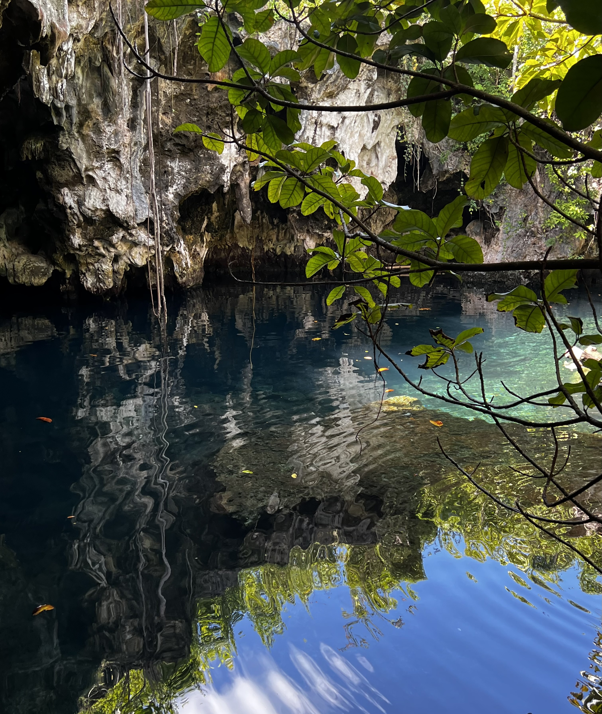
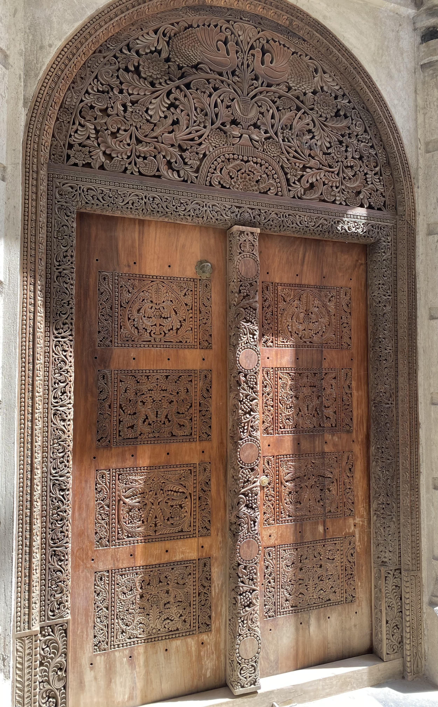

Cet ancien village de pêcheurs a su conserver toute son authenticité. Traversé par une piste
sablonneuse, il semble toujours à l’heure de la sieste...
Le phénomène des marées, observable partout sur l’île sauf au nord, contribue grandement à son
charme. Ces marées dévoilent différents paysages tout au long de la journée offrant des images dignes
de cartes postales.


Zanzibar propose un artisanat riche et diversifié. Faire le plein de souvenirs est donc chose aisée.
Outre les kitenge et autres kangas, ces tissus chatoyants portés par les femmes, vous aurez l’embarras
du choix : bijoux Massaï faits de perles colorées, coffres en bois ornés de laiton, épices...
N’oubliez pas de jeter un œil aux magnifiques portes en bois sculptées.
L’île présente une biodiversité terrestre et marine étonnante et une nature encore préservée. Elle offre
une multitude d’activités et de points d’intérêts.
Se reposer sur les plages et autres bancs de sable paradisiaques, faire du snorkeling ou de la plongée
à la découverte de splendides fonds marins, nager avec des dauphins ou rencontrer des singes, visiter
une grotte ou une ferme aux épices, s’essayer au kitesurf...
Il y en a pour tous les goûts.


Surnommée «l’île aux épices», Zanzibar offre par son histoire une délicieuse cuisine métissée qui
ravira vos papilles gustatives. Poissons, fruits de mer, viandes grillées, lait de coco, riz pilau... une
gastronomie riche en saveurs entre Afrique et Asie! Vous ne serez pas non plus en reste en dégustant
de succulents cocktails ou des limonades au gingembre, citron et sucre de canne. Un régal!

Prenez le temps de partir à la rencontre de ce peuple chaleureux qui ne cessera de vous répéter,
sourire aux lèvres, «karibu»: soyez les bienvenus. Les habitants ne manqueront en effet pas
d’échanger avec vous quelques mots en swahili. Jambo! Habari gani? Mzuri sana, asante. Hakuna
matata!
Observez la vie locale traditionnelle s’écouler dans une ambiance décontractée.


Unique en son genre, parfait reflet de l’âme multiculturelle de l’île, la vieille ville de Zanzibar a été classée au patrimoine mondial de l’humanité par l’Unesco en 2000. Son architecture porte les traces d’un passé arabe et indien. Se perdre dans le dédale des ruelles de ce centre historique est la meilleure façon de la visiter.
